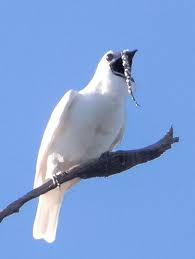
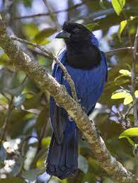
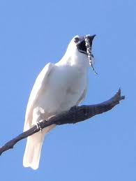
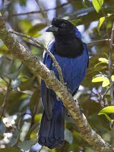

PÁSSAROS REGIONAIS DO PARANÁ
Aqui irei apresentar algumas espécies de aves que residem na região paranaense, e que você com certeza ja viu ou ouviu.
 

Bem-te-vi
Informações: Bem-te-vi
Araponga
Informações: Araponga
Gralha Azul
Informações: Gralha Azul


Bem-te-vi
Informações: Bem-te-vi
Araponga
Informações: Araponga
Gralha Azul
Informações: Gralha Azul
DISTRIBUIÇÃO GEOGRÁFICA DAS ESPÉCIES:
Bem-te-vi (Pitangus sulphuratus)
Araponga (Procnias nudicollis)
Gralha Azul (Cyanocorax caeruleus)
PARA BAIXAR ESSE CONTEÚDO EM PDF
Baixe aqui sobre mais aves paranaenses.